Logo · Round 04 · October 2026
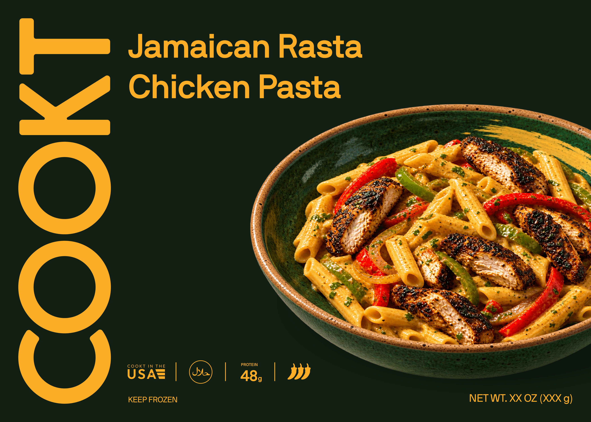
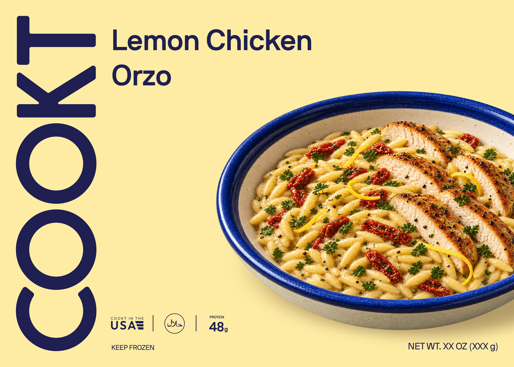
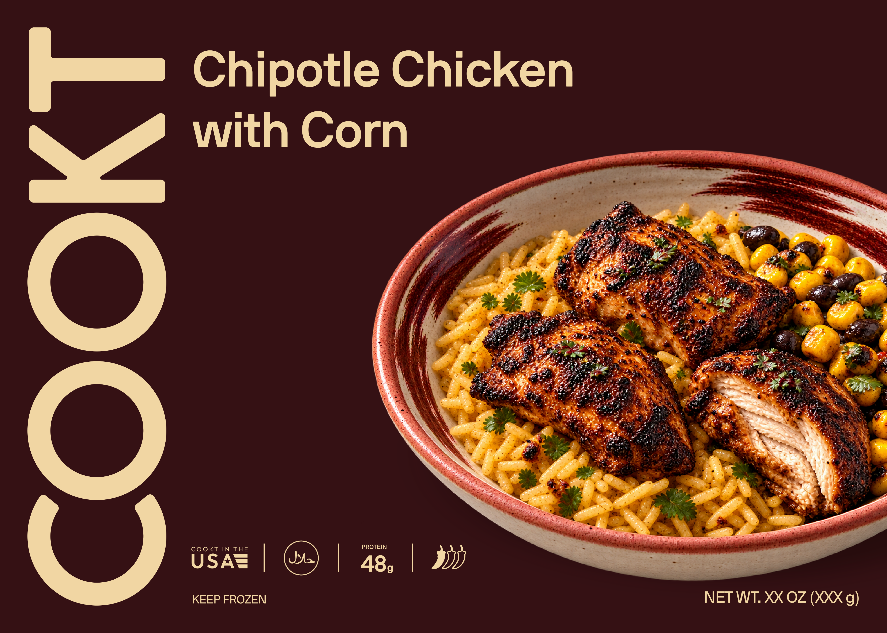
Round 03 feedback
Every stem widens toward its ends,the way chisel-cut letters do.
Same circle, same counter.Only the cut changes.
Both cuts follow the slope of the K’s arm.Symmetric, like the plate.
The top cut follows the K’s arm,the bottom its leg.
A · Served
B · Echo
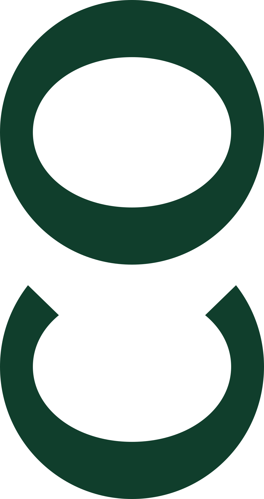
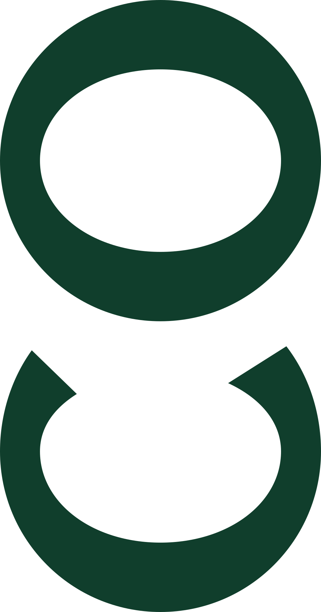
Current V3
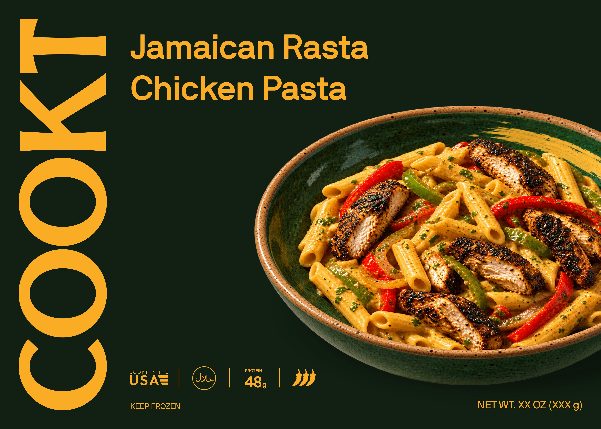
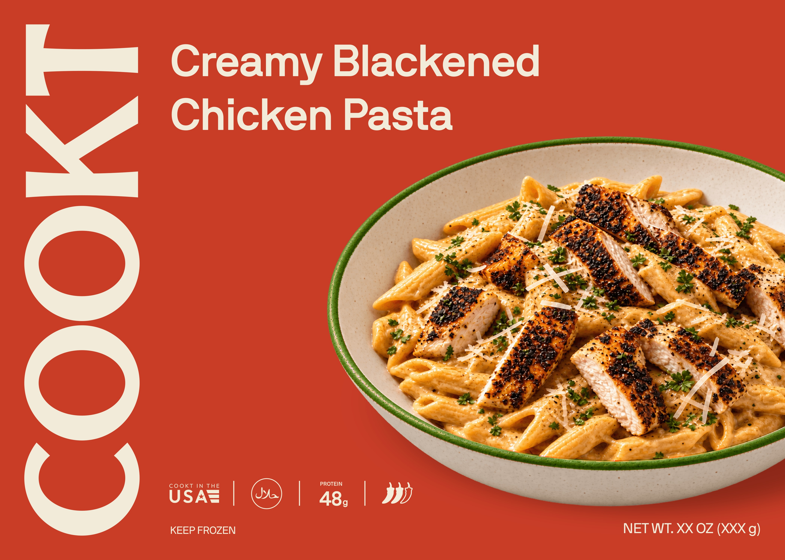
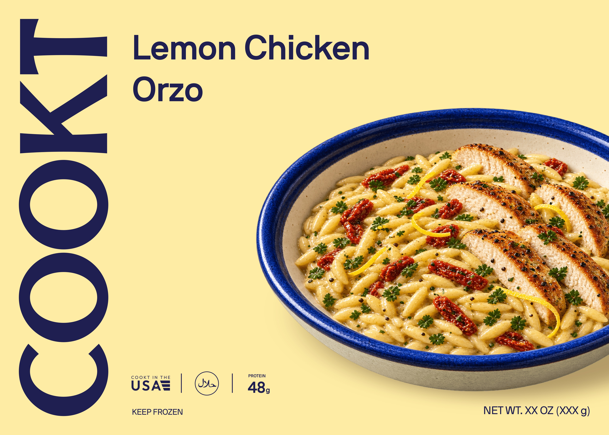
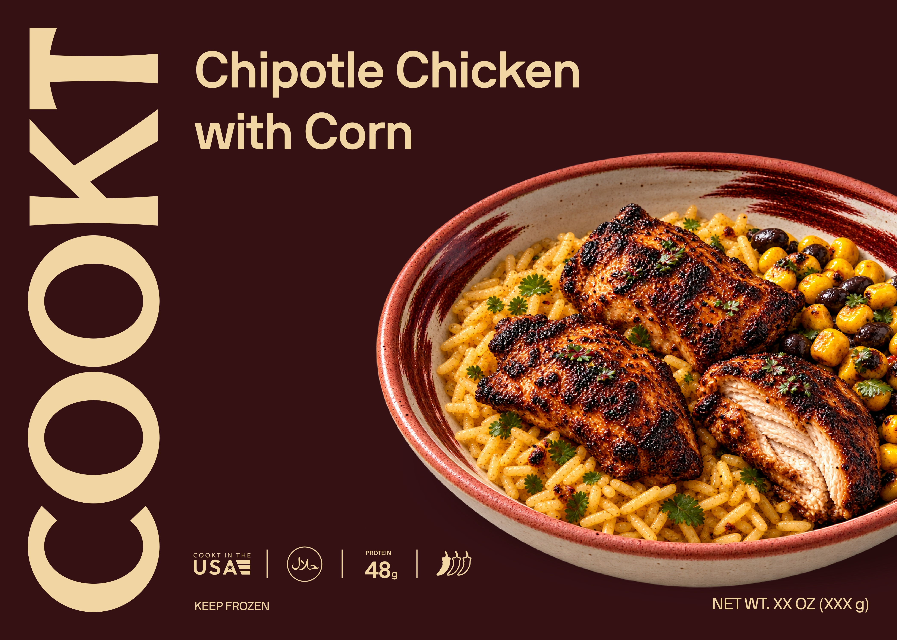
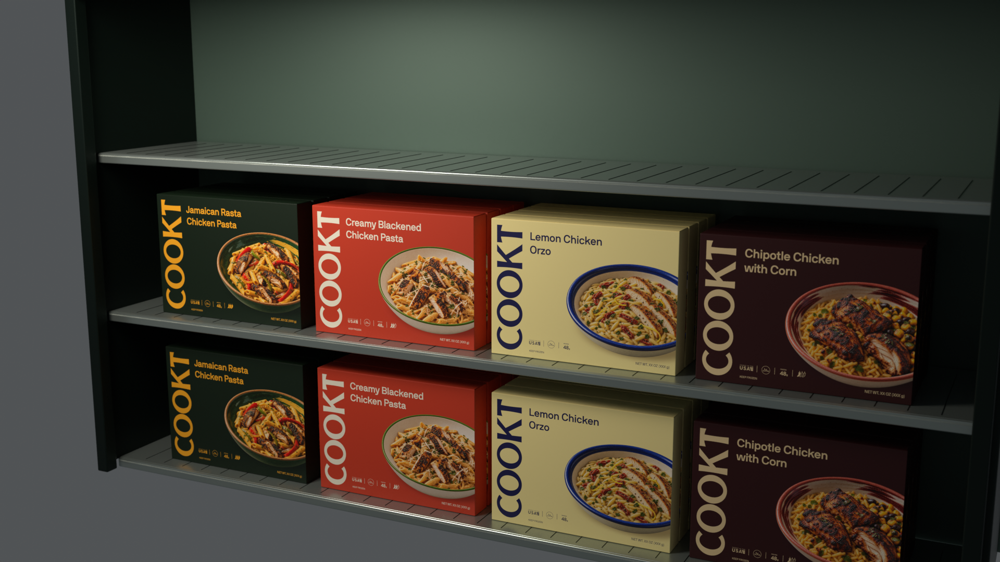
9:41
Tuesday, October 6
Cookt
LemonChicken Orzo
@getcookt
App
Browser
Social
The top cut follows the K’s arm,
the bottom its leg.
Lock the C.Final spacing.Master artwork for print.